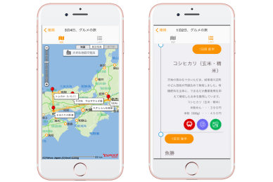

また、旅がしたくなるアプリ
THERMA
日常をもっと面白くするをテーマにサービスを考えた。そこで自分たちは何でワクワクしているのか、深堀して、最近インスタグラムなどのSNS の普及により旅をする楽しさが増加しているように感じ、もっと旅をしたくなるようなサー ビス、自動しおり作成サービスを考えた。
私はアプリのデザイン、ロゴ、プレゼン、プランニングを行いました。
SERVICECONSEPT
ダーツの旅のようなワクワクをもっと簡単に
まだ自分が行ったことも聞いたことのないワクワクするようなスポットに出会いたい！が、
旅には、行き方や値段、時間やスポットの下調べなど様々なめんどくさいことが多い。
それを解決するサービスを提案した。
DESIGHNCONSEPT
もっとも簡単に、もっとワクワクするように
ボタンを押したり、画面を移動したりなどの操作を少ない工程で旅のしおりを作ることがで
きるまた、スポットのデータを大量に本物のデータを入れ込み、テーマごとに種類分けを行
い、それらが実現可能なプランにするために調整を行った。
TARGET
旅をするのが好きだが、わざわざ色々調べたりあまりめんどくさいことはしたくない 好奇心は多いが、もっと手軽にいろんなところに旅がしたい人
COMMENTARY
1.日数を選択
2.旅のテーマを選択
たった2ステップで旅のプランが作ることができる

テーマに沿った旅のしおりを作成してくれる
距離と時間計算して日数に合わせたスポットを算出エキスパートとグーグルと連携しており、そのスポットまでの行き方と値段と時間を見ることができる。
SOURCE
Yahoo! Open Local Platform
駅すぱあと Webサービス
kintone API
HeartRails Express API